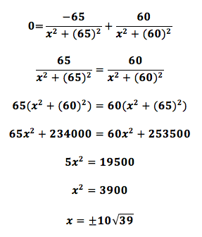

Step Two
The Solving
What the visuals boil down to is:
Using basic Trigonometry (Geometry, even), we can generable the following equations:
(1)
(2)
Because we want to solve for the maximized view of the reef, we want to focus on the θ2. Let's isolate it and substitute θ1 with the first equation.
After setting it up, we can solve for the angle's maximum by differentiating the equation with the knowledge of 1) arctan(x) = 1/(1+x^2) and 2) the Chain Rule.
Set the equation to zero and solve for x.

In this problem, x represents distance. It cannot be negative, which means we are left with one answer.
Parker needs to travel 10√39 (or 62.45) meters for the widest possible view.